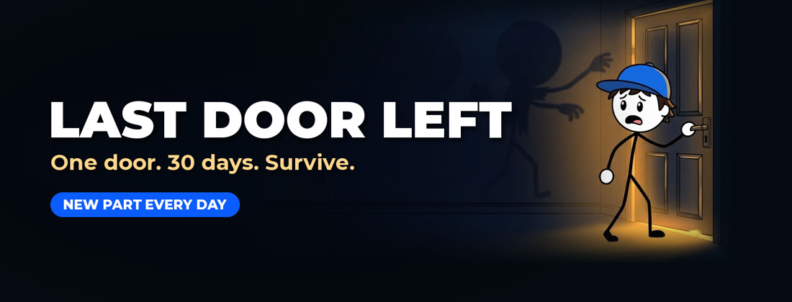

Last Door Left is an original animated series. Each episode follows one ordinary person trapped in one ordinary place during a zombie outbreak, day by day, using real survival facts to stay alive.
New full episodes on YouTube. Short daily parts on Instagram, Facebook and YouTube Shorts.
Hotels, offices and buildings you know, and the systems inside them that turn against you.
Water, food, power and first aid, checked against real sources and shown on screen.
Every episode covers 30 days, one problem at a time, with numbers that always add up.
Last Door Left Uploader is a small private tool used only by the channel owner. It uploads the channel's own original videos to the Last Door Left YouTube channel and schedules them, using the official YouTube Data API. It has no other users and does not collect data about viewers.
Read the Privacy Policy and Terms of Service.